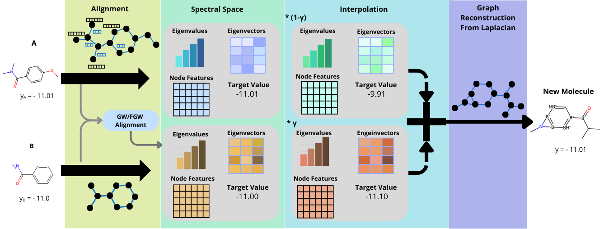
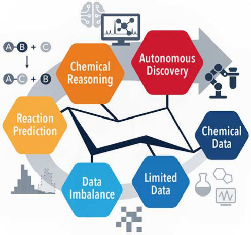
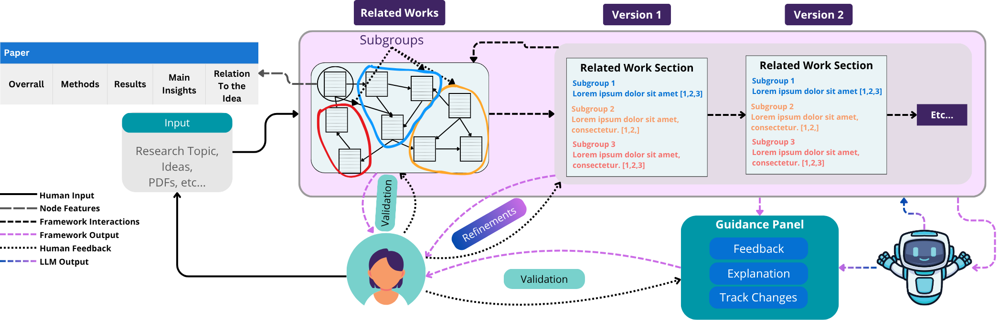

Brenda Nogueira
PhD Student in Computer Science and Engineering at the University of Notre Dame, working at the intersection of AI for Science, graph learning, generative AI, and imbalanced regression.
About me
I am a Ph.D. student in Computer Science and Engineering at the University of Notre Dame, advised by Prof. Nitesh V. Chawla and Prof. Nuno Moniz. My research focuses on imbalanced regression learning, AI for Science, and graph, generative, and agentic AI. I develop machine learning methods for scientific applications including chemistry, biochemistry, genomics, molecular design, virtual screening, and drug discovery.
Honors & Awards
- Scientific Artificial Intelligence Graduate Fellowship — 2025
- NSF Center for Computed Assisted Synthesis Travel Award — 2026
NSF Center for Computed Assisted Synthesis Travel Award — 2025 - International Mathematics Without Borders Olympiad, Brazilian Section | Gold medal, 2016
Education
PhD in Computer Science and Engineering
Advisors: Prof. Nitesh V. Chawla & Prof. Nuno Moniz.
Master in Data Science
Thesis: Fish Size Measurement System for Long-Term Growth Studies in the Azores.
Bachelor in Mathematics with Minor in Computer Science
Publications [Google Scholar]
Preprints and Under Submissions
Peer-Reviewed Publications
-

-

-

-
Automated Fish Size Measurement System for Long-Term Growth Studies in the Azores
Selected Experiences
Please kindly find my full experience list on my CV.
Guest Researcher — Los Alamos National Laboratory
- Continuation of the Summer Internship in Advancing Machine Learning for Scientific Discovery.
Summer Intern — Los Alamos National Laboratory
- Summer Internship in Advancing Machine Learning for Scientific Discovery. (Paper in preparation)
Research Fellow — INESCTEC
- Multi-objective optimization of raw material utilization for cutting and packing solutions in industry.
Research Fellow — FCUP
- Developed an automated NLP pipeline for email–entity association to support internal processes at an industry partner.
Research Initiation Fellow — INESCTEC
- Machine learning for imbalanced time-series prediction about landings in the OKEANOS dataset. (Paper)
Intern — INESCTEC
- Development of an online platform using Shiny/R for an AutoML solution. (Code)
Volunteer Intern — INESCTEC
- Implementation of real-time face-based sleepiness recognition web-app. (Code)
Research Interests
- Imbalanced Regression Learning: Designing data-driven solutions to enhance predictive performance in imbalanced and rare-event regression problems.
- AI for Science: Applying AI and machine learning to real-world challenges in science and mathematics, including chemistry, biochemistry, and genomics, with applications in mathematical modeling, molecular design, virtual screening, and drug discovery.
- Graph, Generative & Agentic AI: Developing graph-based, generative (VAE, diffusion), and agentic AI systems for synthetic data generation, predictive modeling, and autonomous decision-making.
Projects
Spectral Manifold Harmonization for Graph Imbalanced Regression
Novel approach to address imbalanced regression challenges on graph-structured data by generating synthetic graph samples that preserve topological properties while focusing on the most relevant target distribution regions.
CodeAutomated Machine Learning
Online platform for public use of the existing automated machine learning method, developed during INECTEC intership.
CodeSleep Detection App
A web application for drowsiness detection developed during summer intership at INESCTEC.
Code